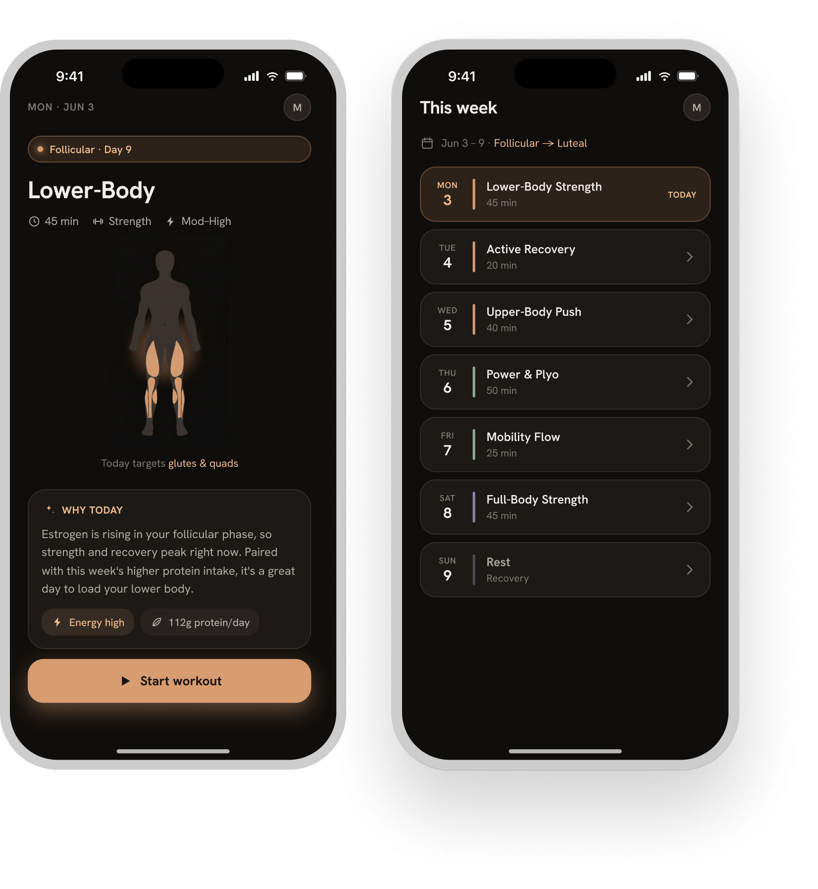
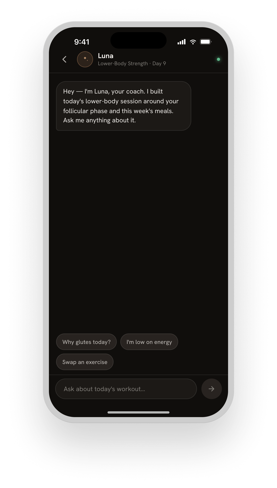
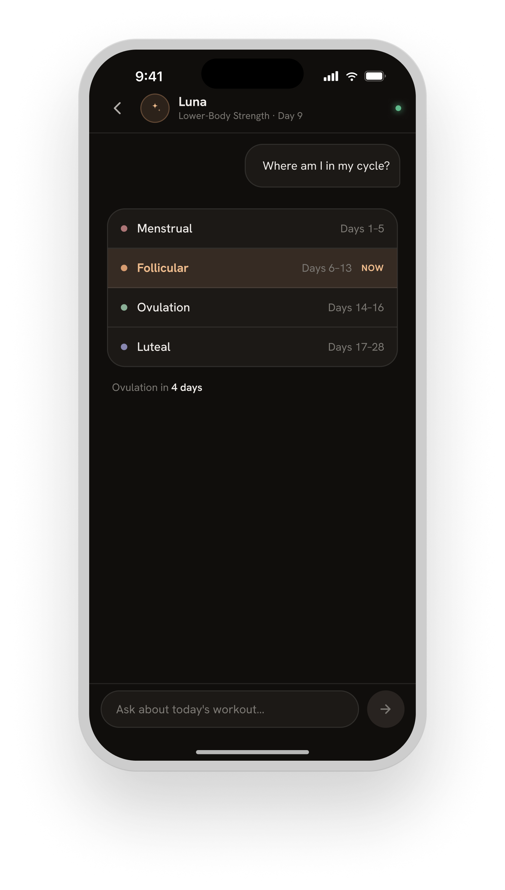
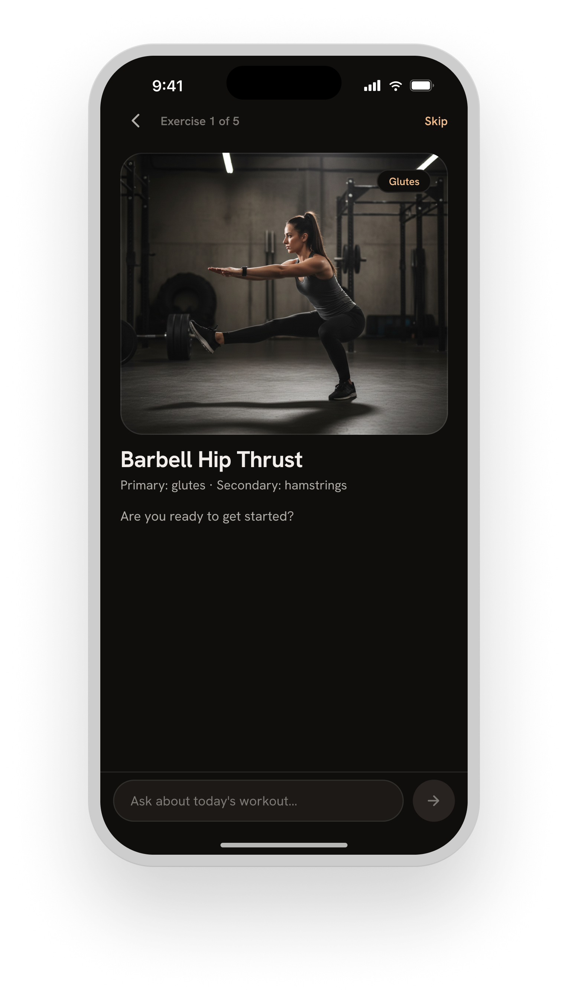
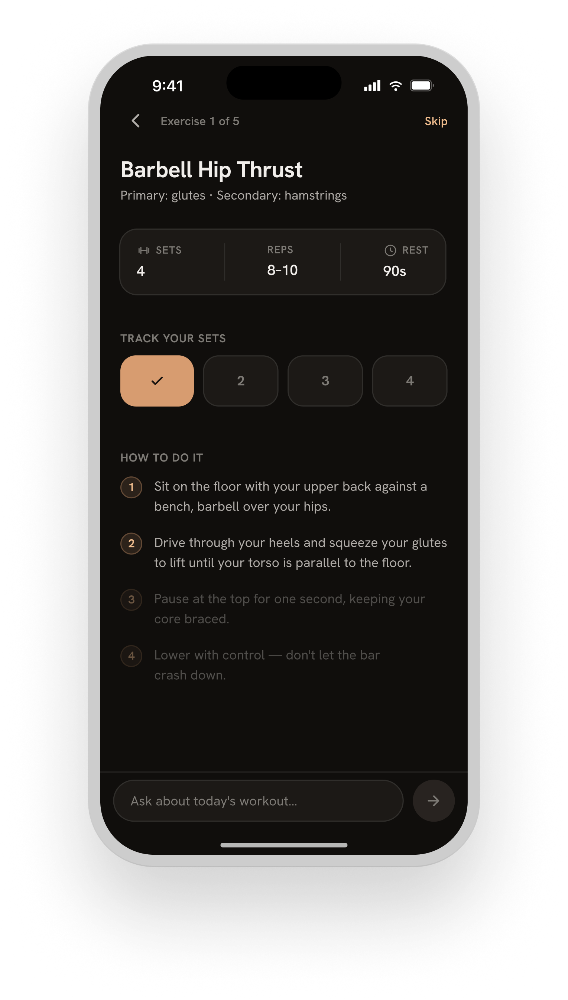
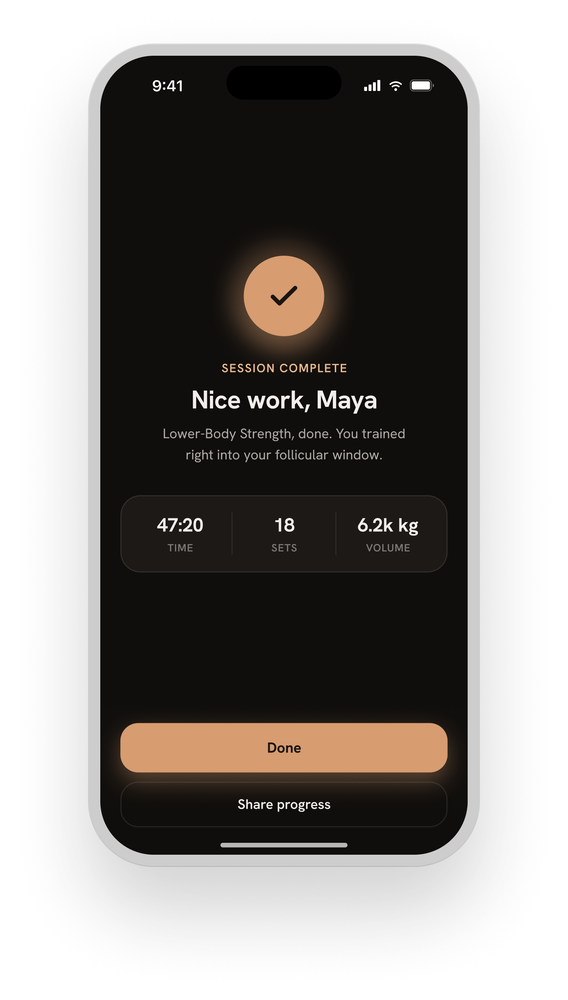
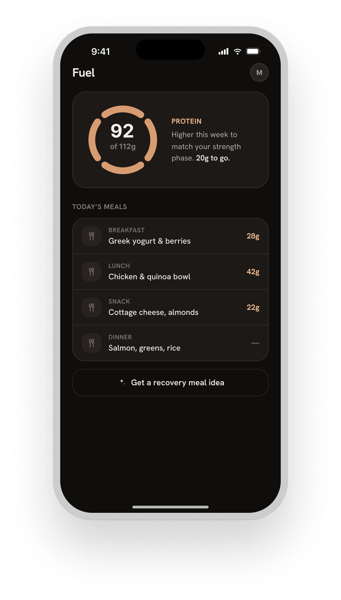
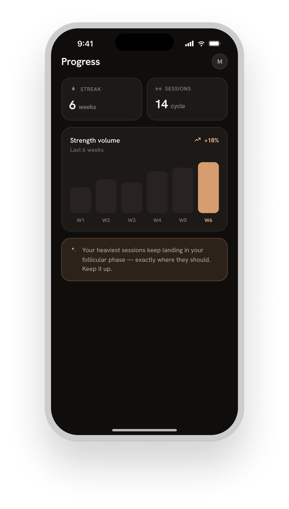
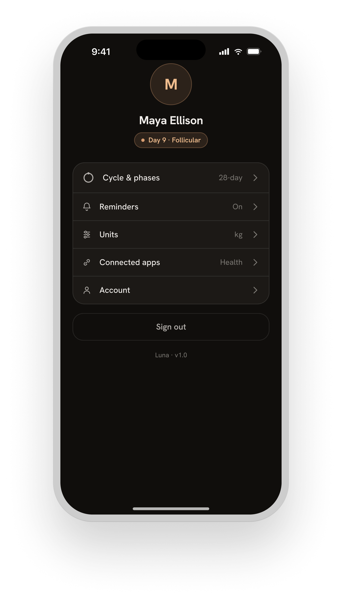
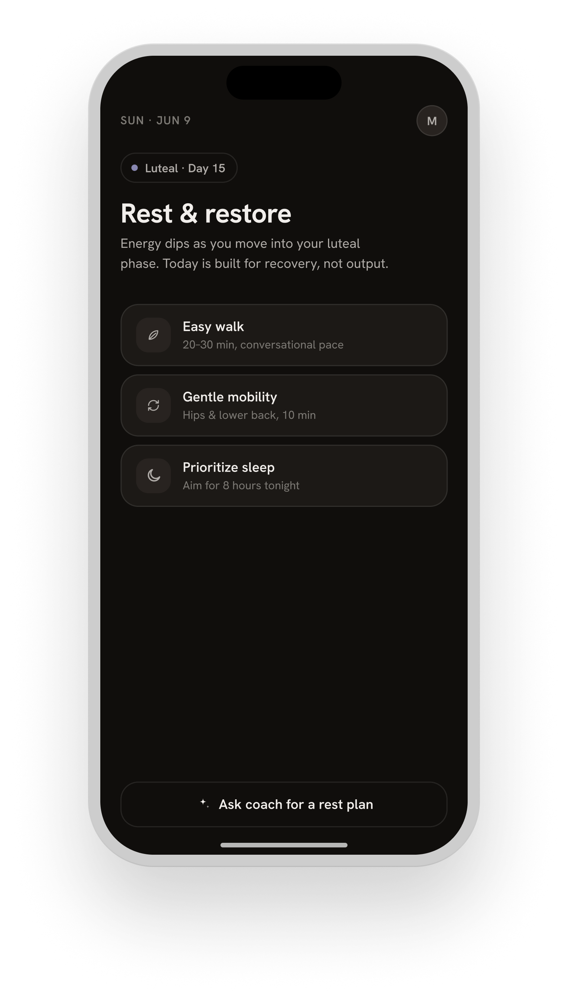

Most fitness apps treat women like small men — the same workouts, the same progression model, the same metrics. But a woman's physiology changes fundamentally across the four phases of her menstrual cycle. Luna was designed to use that data.
The challenge was making cycle-synced training feel like a smart coach, not a clinical tracker. Luna had to be empowering — something you open because it understands you, not because it reminds you to log symptoms.

Each phase has a distinct hormonal signature. During the follicular phase, estrogen rises and strength peaks — ideal for heavy lifting. The luteal phase brings fatigue and a raised core temperature — better suited to mobility and lower-intensity work. Luna maps those patterns to a daily plan automatically.




A quick pre-session check-in — energy, mood, sleep — feeds the model. A low-energy day in a high-output phase triggers an intensity adjustment, not a dismissal.


Nutrition shifts with your cycle. Progress is measured relative to phase — a strong follicular week and a recovered luteal week are both wins, tracked on their own terms.



Users who trained with Luna for two or more full cycles reported significantly higher consistency compared to their previous apps — not because the workouts were easier, but because the plan finally matched how they actually felt.
By designing fitness around women's biology rather than against it, Luna turned the menstrual cycle from a liability into a training advantage.